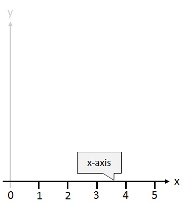
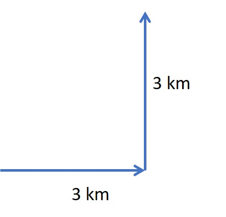
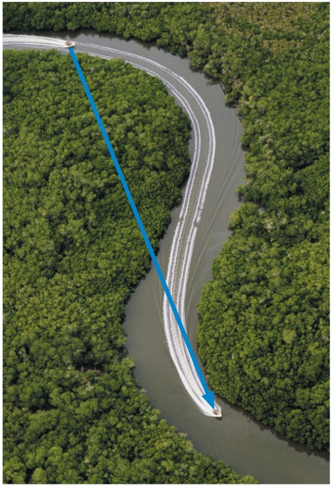

Define and explain the differences between position, displacement, distance, and distance travelled.
Calculate displacement and distance given initial position, final position, and the path between the two.
Define and distinguish between scalar and vector quantities.
Position
When an object moves, its position changes. To measure the change in position we choose a reference point, called the origin. For linear motion (motion that is along a straight line), we can choose the line of motion to be the x-axis of a coordinate system. The origin if the point x = 0.

Motion in a straight line is called one-dimensional motion. We only need one axis - the x-axis. The origin is the point x = 0. The position of an object can be described by its x-coordinate, which tells us both how far the object is from the origin and on which side. Note that motion in two dimensions would require the need for both the x-axis and the y-axis.
When an object moves from an initial position to a final position, we can use two quantities to describe how far the object moves: distance and displacement.
Distance is the length the object travels, measured along the path of motion. It is always a positive number. It is a scalar quantity which means it has a magnitude only. The SI unit for distance is the metre (m).
When a physical quantity is described by a single number (with a unit), we call it a scalar quantity. A scalar can be positive, negative, or zero. For example, the mass of an object might be 6 kg or the temperature outside might be -3 °C.
Displacement is the change in position, which has two aspects: magnitude and direction, and is therefore a vector quantity. The magnitude is measured in the same units as distance (metres). The direction could be left or right, up or down or a compass point (e.g. east). In one-dimensional motion on an x-axis, there are only two possible directions: the positive and the negative x-directions.
A quantity that has both a magnitude (e.g. How far? or How fast?) and a direction (e.g. Which way?) is called a vector. The magnitude of a vector can be positive or zero, but it cannot be negative.
The magnitude of the displacement is the length measured along a straight line between the initial (xi) and final (xf) positions. The displacement is written Δx, where the symbol Δ (the uppercase Greek letter delta) means the change in the quantity.
Δx = xf - xi
Worked example

A bird flies 3km east then 3 km north.
a) What is the distance it travelled?
b) What is its displacement at the end of the journey?
Solution
a) What is the distance it travelled?
Distance is the length the object travels, measured along the path of motion.
So the distance equals 3 km + 3 km = 6 km.
b) What is its displacement at the end of the journey?
An object's displacement vector is drawn as an arrow from the object's initial position to its final position, regardless of the actual path followed between these two points. The length of the vector arrow is proportional to the magnitude of the vector quantity.
You can then use Pythagoras' theorem (C2 = A2 + B2) to find the length of the displacement vector.
C2 = 32 + 32 = 9 + 9 = 18
C = √18 = 4.2 km
So the displacement at the end of the journey is 4.2 km NE (don't forget a vector needs a direction)
Note from the example that the magnitude of the displacement is not necessarily equal to the distance travelled. The displacement depends only on the starting and ending positions, not on the path taken.
A speed boat is cruising on a river. I needs to follow the bends in the river. However, the boat's displacement is the straight line connection from its initial to its final position. Note the displacement tells you how far the object is from where it started, but it does not tell you how far the object travelled.

Activity
PRESCRIBED READING: Giambattista Physics (5th ed.). New York: McGraw-Hill, Section 2.1 - Position and Displacement.
WATCH THIS VIDEO: It summarises the concepts of Distance and Displacement.
START A GLOSSARY OF TERMS: Try to define and summarise terms and concepts as they are introduced. Add to it with each module you do. You could start with: One-dimensional motion, vector, displacement, distance and scalar.
START A SUMMARY OF KEY EQUATIONS: Try to summarise key equations and make sure you know how to use the equations in numerical calculations. Add to the list with each module you do. This summary will be useful in the online quizzes and in the examination.
TRY THE FOLLOWING (attempt questions before looking at the answers):